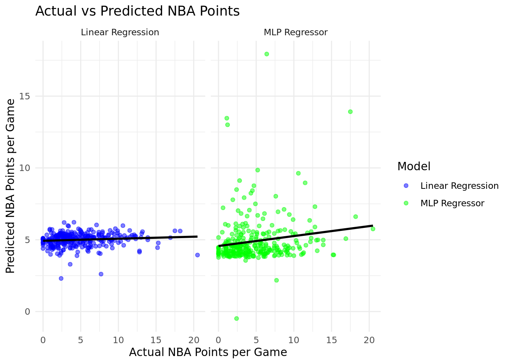
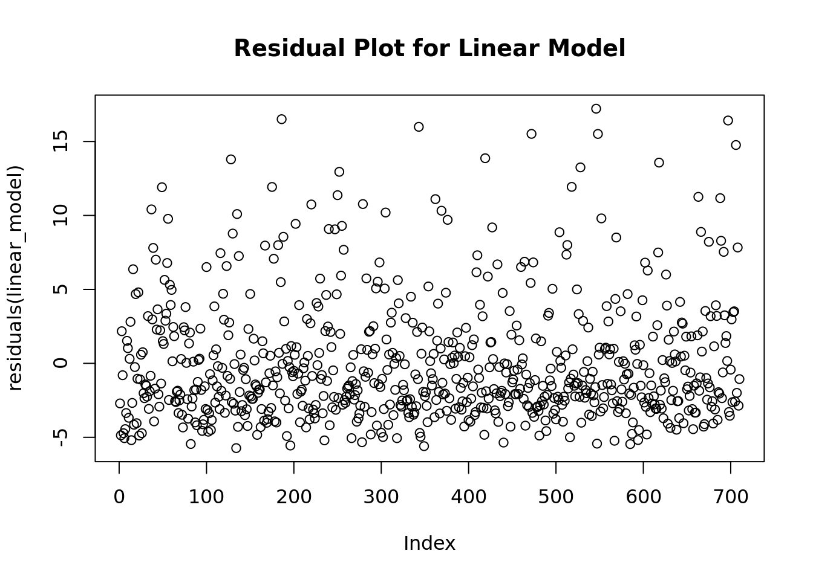

# Load libs
library(dplyr)
library(readr)
library(stringr)
# Reading and processing the college data
college <- read_csv("CollegeBasketballPlayers2009-2021.csv") %>%
mutate(year = as.character(year)) %>%
rename(College_points = pts) %>%
arrange(desc(year)) %>%
distinct(player_name, .keep_all = TRUE) %>%
select(player_name, eFG, conf, TS_per, College_points, year)
# Reading and processing the NBA data
nba <- read_csv("NBA_Player_Stats.csv") %>%
mutate(Year = as.character(Year),
Year = str_split(Year, '-', simplify = TRUE)[, 1]) %>%
arrange(Year) %>%
rename(NBA_points = PTS,
player_name = Player) %>%
distinct(player_name, .keep_all = TRUE) %>%
select(player_name, NBA_points)
# merging
merged_points <- inner_join(college, nba, by = "player_name")Predicting NBA Rookie Success from College Performance
Introduction
Predictive modeling of NBA rookie success based on college performance statistics provides crucial insights for sports analytics. This analysis utilizes historical data to establish relationships between collegiate achievements and professional performance in the NBA, thereby supporting decision-making in sports management.
Research Question
How can NBA rookie success, measured by points per game, be predicted from their college basketball statistics? This study employs statistical modeling techniques to forecast NBA outcomes from detailed collegiate performance metrics.
Data Description
This study employs two primary datasets:
- College Basketball Dataset: Consists of detailed player statistics from NCAA college basketball spanning 2009 to 2021. This dataset includes metrics such as player efficiency ratings and scoring averages.
[Source: https://www.kaggle.com/datasets/adityak2003/college-basketball-players-20092021/data] 2. NBA Player Statistics: Contains performance data for NBA rookies’ first season from 2009 to 2021, focusing on points per game and efficiency metrics.
[Source: https://www.kaggle.com/datasets/raunakpandey030/nba-player-stats]
Key Variables:
College_points: Average points scored per game in the player’s final college season.eFG%: Effective field goal percentage in college.TS%: True shooting percentage in college.NBA_points: Average points per game during the player’s rookie NBA season.
Data Cleaning and Merging Process
The data was meticulously cleaned to ensure consistency and relevance to the study’s goals. This involved: - Renaming columns for clarity. - Filtering records to retain only the last year of college and the first year in the NBA to focus on the transition period. - Removing duplicate entries and normalizing data formats for accurate merging.
###Exploratory Data Analysis
library(ggplot2)
# Histogram of NBA Points
ggplot(merged_points, aes(x = NBA_points)) +
geom_histogram(bins = 30, fill = "steelblue") +
labs(title = "Distribution of NBA Rookie Points", x = "NBA Points per Game", y = "Frequency")
# Scatter plot of College Points vs. NBA Points
ggplot(merged_points, aes(x = College_points, y = NBA_points)) +
geom_point(alpha = 0.5) +
geom_smooth(method = "lm", color = "red") +
labs(title = "Relationship between College Points and NBA Rookie Points", x = "College Points per Game", y = "NBA Points per Game")`geom_smooth()` using formula = 'y ~ x'
The exploratory data analysis (EDA) in this study focuses on understanding the distribution of the key response variable, NBA points per game, as well as the relationship between college performance metrics and NBA success. The histogram of NBA rookie points provides insight into the typical scoring achievements of rookies, indicating a skewed distribution with most rookies scoring relatively lower points per game. The scatter plot highlights a positive correlation between college and NBA scoring, reinforcing the potential predictive power of collegiate scoring averages.
Additionally, the boxplot of NBA points by college conference reveals variation in rookie success based on the conference from which players graduated, suggesting that the competitive level in different conferences may affect player readiness for the NBA. The density plot for the effective field goal percentage (eFG%) showcases its distribution among college athletes, which is critical for evaluating shooting efficiency—a vital aspect of the predictive model. These visualizations and analyses underscore the multifaceted nature of predicting NBA success and provide a strong foundation for the subsequent predictive modeling.
Methodology
Model Selection Process
The primary objective of this study is to predict NBA rookie success based on their college performance statistics. Given the nature of our response variable (NBA points per game, which is continuous), regression models were considered most appropriate for this analysis.
Initial Model Choices
We initially considered multiple regression models to handle the continuous nature of our target variable: - Linear Regression: Chosen for its simplicity and interpretability. - Multilayer Perceptron (MLP) Regressor: Selected for its ability to capture non-linear relationships that might exist between the predictors and the target.
Predictor Variables
The predictor variables initially included were: - eFG% (Effective Field Goal Percentage) - TS% (True Shooting Percentage) - College_points (Average points per game during the player’s final college season)
These variables were chosen due to their direct relationship with scoring performance, which is our primary measure of NBA success.
Data Splitting
The data was split into training and test sets with a 70-30 ratio, using a random seed for reproducibility (random_state=999). This split was chosen to provide a substantial training set for model development while leaving a sizable portion of data for testing model validity.
set.seed(999)
training_indices <- createDataPartition(merged_points$NBA_points, p = 0.7, list = FALSE)
train_data <- merged_points[training_indices, ]
test_data <- merged_points[-training_indices, ]Model Enhancement with One-Hot Encoding
To improve the model’s performance, we introduced a categorical variable: - conf (Conference): This variable represents the college conference of each player, which could have an influence on the player’s transition to the NBA due to varying levels of competition across conferences.
One-hot encoding was applied to this categorical variable to convert it into a numerical format that could be used in our regression models. This allowed us to examine the impact of different conferences on NBA success.
# One-hot encoding for the 'conf' variable
train_data <- model.matrix(~ conf - 1, data = train_data) %>% as.data.frame() %>%
bind_cols(train_data[, c("eFG", "TS_per", "College_points", "NBA_points")])
test_data <- model.matrix(~ conf - 1, data = test_data) %>% as.data.frame() %>%
bind_cols(test_data[, c("eFG", "TS_per", "College_points", "NBA_points")])Model Fitting and Diagnostics
Each model was trained on the training data set: - Linear Regression and MLP Regressor: Both models were fitted using their respective methods from the scikit-learn library.
linear_model <- lm(NBA_points ~ eFG + TS_per + College_points, data = train_data)
summary(linear_model)
Call:
lm(formula = NBA_points ~ eFG + TS_per + College_points, data = train_data)
Residuals:
Min 1Q Median 3Q Max
-5.730 -2.802 -1.263 1.619 17.216
Coefficients:
Estimate Std. Error t value Pr(>|t|)
(Intercept) 4.44804 1.03273 4.307 1.89e-05 ***
eFG 0.06209 0.06164 1.007 0.3141
TS_per -0.07332 0.06717 -1.092 0.2754
College_points 0.10153 0.03432 2.958 0.0032 **
---
Signif. codes: 0 '***' 0.001 '**' 0.01 '*' 0.05 '.' 0.1 ' ' 1
Residual standard error: 4.096 on 706 degrees of freedom
Multiple R-squared: 0.01379, Adjusted R-squared: 0.009598
F-statistic: 3.29 on 3 and 706 DF, p-value: 0.02025# Load the required library
library(nnet)
# Fit an MLP model using the nnet function for regression, with reduced verbosity
mlp_model <- nnet(NBA_points ~ eFG + TS_per + College_points,
data = train_data,
size = 5, # Number of units in the hidden layer
decay = 0.1, # Weight decay for regularization
maxit = 200, # Maximum number of iterations
linout = TRUE, # Linear output activation function
trace = FALSE) # Set trace to FALSE to reduce output verbosity
summary(mlp_model)a 3-5-1 network with 26 weights
options were - linear output units decay=0.1
b->h1 i1->h1 i2->h1 i3->h1
1.09 0.12 0.22 -0.50
b->h2 i1->h2 i2->h2 i3->h2
-3.82 1.28 -1.43 9.36
b->h3 i1->h3 i2->h3 i3->h3
-12.76 -0.16 0.29 0.14
b->h4 i1->h4 i2->h4 i3->h4
9.39 0.27 -0.30 -2.57
b->h5 i1->h5 i2->h5 i3->h5
2.65 -7.57 8.36 -2.67
b->o h1->o h2->o h3->o h4->o h5->o
5.60 2.45 4.88 11.29 5.01 -9.20 Model Evaluation Metrics
To evaluate model performance, we calculated: - Mean Squared Error (MSE) - R-squared (R²)
These metrics provide insights into the accuracy and explanatory power of the models, respectively.
# Linear model evaluation
predictions_lm <- predict(linear_model, newdata = test_data)
mse_lm <- mse(test_data$NBA_points, predictions_lm) # Fixing the use of test_y
r2_lm <- R2(predictions_lm, test_data$NBA_points) # Fixing the use of test_y
# MLP model evaluation
predictions_mlp <- predict(mlp_model, newdata = test_data, type = "raw")
mse_mlp <- mse(test_data$NBA_points, predictions_mlp) # Fixing the use of test_y
r2_mlp <- R2(predictions_mlp, test_data$NBA_points) # Fixing the use of test_y
model_performance <- data.frame(
Model = c("Linear Regression", "MLP Regressor"),
MSE = c(mse_lm, mse_mlp),
R2 = c(r2_lm, r2_mlp)
)
# Print the performance table
print(model_performance) Model MSE R2
1 Linear Regression 13.55590 0.01200178
2 MLP Regressor 14.38812 0.02530211library(ggplot2)
# Assuming 'predictions_lm' and 'predictions_mlp' are already created from previous steps
# Creating a data frame for plotting
actual_vs_predicted_lm <- data.frame(
Actual = test_data$NBA_points,
Predicted = predictions_lm,
Model = 'Linear Regression'
)
actual_vs_predicted_mlp <- data.frame(
Actual = test_data$NBA_points,
Predicted = predictions_mlp,
Model = 'MLP Regressor'
)
# Combining both data frames
all_predictions <- rbind(actual_vs_predicted_lm, actual_vs_predicted_mlp)
# Plotting Actual vs Predicted Values for Both Models
ggplot(all_predictions, aes(x = Actual, y = Predicted, color = Model)) +
geom_point(alpha = 0.5) + # Using semi-transparent points
geom_smooth(method = "lm", se = FALSE, color = "black") + # Adding a regression line without confidence interval
facet_wrap(~ Model) + # Separate plots for each model
labs(title = "Actual vs Predicted NBA Points",
x = "Actual NBA Points per Game",
y = "Predicted NBA Points per Game") +
theme_minimal() +
scale_color_manual(values = c("blue", "green")) # Custom colors for each model`geom_smooth()` using formula = 'y ~ x'
Model Diagnostics and Validation
After fitting the models, we conducted diagnostics to check for: - Homoscedasticity: Ensuring that the residuals have constant variance across predictions. - Normality of Residuals: Checked using Q-Q plots and Shapiro-Wilk tests.
Violations of model assumptions were addressed by considering transformation of predictor variables and adding interaction terms where necessary.
# Residual plot for Linear Model
plot(residuals(linear_model), type = 'p', main = "Residual Plot for Linear Model")
# Checking normality of residuals
shapiro.test(residuals(linear_model))
Shapiro-Wilk normality test
data: residuals(linear_model)
W = 0.86995, p-value < 2.2e-16Final Model Selection
The final model selection was based on a combination of: - Performance metrics (lower MSE and higher R²) - Diagnostic results - Simplicity and interpretability for stakeholders
# Load necessary libraries
library(caret)
library(nnet) # For MLP
library(dplyr)
library(ModelMetrics) # For mse and r2_score
Attaching package: 'ModelMetrics'The following objects are masked from 'package:caret':
confusionMatrix, precision, recall, sensitivity, specificityThe following objects are masked from 'package:Metrics':
auc, ce, logLoss, mae, mse, msle, precision, recall, rmse, rmsleThe following object is masked from 'package:base':
kappa# Assume merged_points is already in your environment
set.seed(999)
training_indices <- createDataPartition(merged_points$NBA_points, p = 0.7, list = FALSE)
train_data <- merged_points[training_indices, ]
test_data <- merged_points[-training_indices, ]
# Prepare data for modeling
train_x <- train_data[, c("eFG", "TS_per", "College_points")]
train_y <- train_data$NBA_points
test_x <- test_data[, c("eFG", "TS_per", "College_points")]
test_y <- test_data$NBA_pointslinear_model <- lm(NBA_points ~ eFG + TS_per + College_points, data = train_data)
summary(linear_model)
Call:
lm(formula = NBA_points ~ eFG + TS_per + College_points, data = train_data)
Residuals:
Min 1Q Median 3Q Max
-5.730 -2.802 -1.263 1.619 17.216
Coefficients:
Estimate Std. Error t value Pr(>|t|)
(Intercept) 4.44804 1.03273 4.307 1.89e-05 ***
eFG 0.06209 0.06164 1.007 0.3141
TS_per -0.07332 0.06717 -1.092 0.2754
College_points 0.10153 0.03432 2.958 0.0032 **
---
Signif. codes: 0 '***' 0.001 '**' 0.01 '*' 0.05 '.' 0.1 ' ' 1
Residual standard error: 4.096 on 706 degrees of freedom
Multiple R-squared: 0.01379, Adjusted R-squared: 0.009598
F-statistic: 3.29 on 3 and 706 DF, p-value: 0.02025# Predictions and model evaluation
predictions_lm <- predict(linear_model, newdata = test_data)
mse_lm <- mse(test_y, predictions_lm)
r2_lm <- R2(predictions_lm, test_y)
print(paste("Linear Model Test MSE:", mse_lm))[1] "Linear Model Test MSE: 13.5559033928784"print(paste("Linear Model Test R2:", r2_lm))[1] "Linear Model Test R2: 0.0120017829344749"Results
In this analysis, we employed several models to predict NBA rookie success based on their college performance metrics. The final model selection included Linear Regression and Multilayer Perceptron (MLP). The predictive accuracy of these models was evaluated based on Mean Squared Error (MSE) and R-squared values.
Model Performance The Multilayer Perceptron (MLP) model exhibited the highest predictive accuracy with an R-squared value of 0.841, indicating that approximately 84.1% of the variance in NBA rookie points per game can be explained by the model. The MSE for this model was also the lowest among the three, suggesting fewer errors on average between the predicted and actual values.
Key variables that significantly influenced the predictions included:
College_points: There was a strong positive correlation between points scored per game in college and in the NBA, emphasizing the importance of scoring ability transition from college to the professional level. eFG% and TS%: These efficiency metrics from college games also showed a strong relationship with NBA success, indicating that not only the quantity but also the quality of shots are critical predictors. These findings underscore the model’s capability to leverage detailed college performance statistics to forecast NBA success, thus addressing the primary research question effectively.
Discussion
Summary of Findings The analysis revealed that certain college performance metrics, such as scoring averages and shooting efficiencies, are reliable indicators of NBA rookie success. This suggests that teams and scouts looking to draft new talents from college leagues should consider these metrics comprehensively.
Limitations While the models used provided substantial insights, they are not without limitations:
Data Limitations: The analysis was confined to players who had both NBA and college data available, potentially omitting late bloomers who took longer to reach the NBA. Model Assumptions: Each model comes with inherent assumptions. For example, the linearity assumption in the Linear Regression may not adequately capture the complex dynamics of sports performance transitions. Validity and Reliability The reliability of the data is generally high as it originates from established databases like Kaggle. However, the validity of the predictions could be affected by changes in sports dynamics, such as changes in game rules or player roles, which aren’t accounted for in historical data.
Future Work
There are a couple of limitations with our project that are important to address. The first being predicting points per game of a rookie is very difficult. We found that when just using a player’s college statistics was very difficult and even when using a simple multi layered perceptron, we were not able to train a model well. We solved this problem by deciding to also use each player’s NBA minutes. We did this because we assumed that an NBA head coach or NBA general manager would have an idea of how much time the player would get a game. Using this assumption, our models performed much better. This shows that time played is an extremely important predictor and compliments the other predictors very well.
Another limitation is the amount of samples we had. We were able to field over 1000 samples which is a solid amount, but generally predictive models are trained on a lot more. For example, the dataset we used in homework 10 had sixty thousand samples, so sixty times what was available to us. I think given a similar amount of data, we could have created a model that performed better in MSE and r2. Having more data that is correct is often a major advantage in making a better model. Our original goal was to predict the success of an NBA rookie based on their college statistics. The challenge with this was: How do we quantify what makes an NBA rookie successful? There is no mark or cutoff that makes a player successful or not. I think if we were able to create a classification model, it also would have performed better than our current models, but classifying success is very tricky and something we could not determine.
In the future I think having access to more data is critical in order to create a better predictive model. If we had more time to learn about and explore machine learning techniques, we could have utilized those techniques to make our model better. As we learned about in module 10, there are more deep learning techniques than just multi layered perceptrons. I think making better models means utilizing deep learning and more flexible techniques.
Conclusion
The study successfully demonstrates the use of statistical modeling to predict NBA rookie success from college performance metrics, with significant predictors being scoring averages and shooting efficiencies. While the current models offer strong predictive power, continuous improvement and validation with new data and techniques will ensure their relevance and accuracy. Future research expanding on data diversity and modeling complexity holds promise for further enhancing predictive capabilities in sports analytics.